Navigatie
Primitieven
Verwijderen
Blender opent altijd met een cube.
Deze verwijder je door X in te drukken, of Object > Delete in het menu te selecteren.
Extra info
Plaatsen
Nieuwe objeten plaats je via de shortcut Shift+a, of via het Add menu.
Voor deze opdracht hebben we enkel objecten van het type Mesh nodig.
Nieuwe objecten lijken in het midden te komen, maar eigenlijk komen ze op de plek van de 3D cursor te staan.
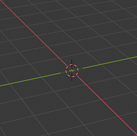
Extra info
Positie, schaal en rotatie
Verplaatsen, herschalen en roteren die je via deze Shortcuts:
- G: verplaatsen (grab)
- S: herschalen (scale)
- R: Roteren (rotate)
Om deze shortcuts beter te onthouden kan je denken aan de engelse namen grab (verplaatsen), Scale (herschalen) en rotate (roteren).
Bewerkingen uitvoeren over 1 as
Wil je deze bewerking uitvoeren over 1 as, dan druk je de toets in van deze as.
- X: X-as
- Y: Y-as
- Z: Z-as
Extra info
Oefening 01: Cartoon
Opdracht
Kies een cartoon of stripfiguur en maak het zo nauwkeurig mogelijk na in Blender.
Tips
Materialen
Nieuwe materialen aanmaken
Om onze primitieven kleur te geven werken we met zogenaamde Materials.
Via deze materials zullen we onze primitieven de eigenschappen kunnen geven van echte materialen.
-
We veranderen onze Viewport Shading van Solid naar Material Preview.
Dit zorgt ervoor wat onze materialen zichtbaar worden.
Dit staat standaard uit, omdat bit Blender trager maakt, je ze dit best enkel aan wanneer je je materialen aan het maken bent.
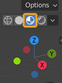 -
Om onze materialen te kunnen bewerken openen we de Material Properties.
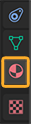 -
Om een nieuw materiaal aan te maken klikken we op New.
Dan kunnen we een Base Color kiezen.
De andere materiaal eigenschappen komen later nog aan bod.
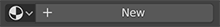
Materialen herbruiken
Door op het Browse Material naast New te klikken kunnen we een materiaal selecteren dat je reeds gemaakt hebben.
Wanneer we een materiaal aanpassen, zulle alle objecten die dat meteriaal dragen mee aangepast worden.
Extra info
Oefening 02: Cartoon inkleuren
Opdracht
Gebruik de bovenstaande methodes om je cartoon of stripfiguur in te kleuren.
Tips
- Probeer zoveel mogelijk materialen te herbruiken.
Modifiers
Modifiers
Modifiers passen de vorm van objecten aan, op een niet destructieve manier.
Niet destructief wil zeggen dat je nadien de modifiers nog kan aanpassen of verwijderen zonder het originele object aan te passen.
Modifiers toevoegen
-
Ga naar de Modifier Properties.
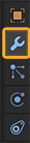 -
Klik op Add Modifier en kies een modifier.
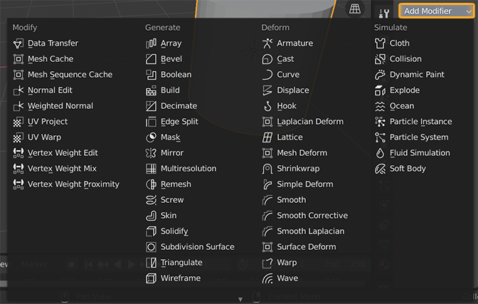 -
Nu kan je de eigenschappen van de modifier aanpassen.
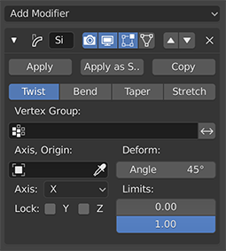
Meestgebruikte modifiers
Simple Deform
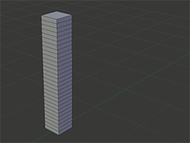Simpele vervromingen zoals Twist, Bend, Taper en Stretch.
Cast
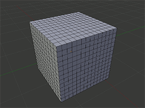Vervorm je object naar een kubus, cylinder of bol.
Wave
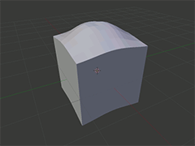Toon golven op je object.
Wireframe
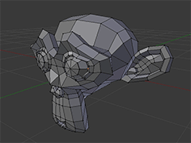Toon de opbouw van je object.
Boolean
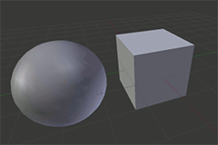Selecteer een 2e object en snij dit uit of voeg dit toe aan je object.
Selecteer een 2e object en druk op Apply om deze modifier toe te passen.
Mirror
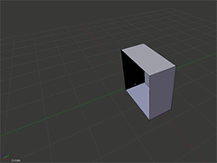Spiegel je vorm.
Druk op de Tab toets en verplaats je object om de weerspiegeling te zien.
Subdivision Modifier
Met de Subdivision Modifier kan je de interne structuur van een object verfijnen.
Dit kan je het best zien in de Wireframe Viewport Shading.
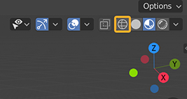
Soms zullen Modifiers niet duidelijk zichtbaar zijn, dit kan komen omdat de interne structuur van het object niet fijn genoeg is.
Dit kan je oplossen met de Subdivision Modifier.
Selecteer Simple en verhoog het Viewport nummer.
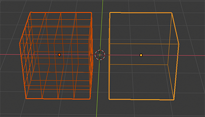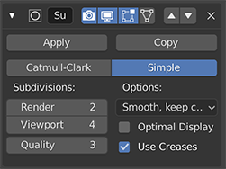
Modifier stack
Je kan verschillende Modifiers toevoegen op hetzelfde object.
Dit heet de Modifier Stack.
De volgorde is zeer belangrijk waarop je deze Modifiers toevoegt bepaald de uiteindelijke vorm van je Object.
Voorbeeld 1
Boolean Modifier
Simple Deform
Voorbeeld 2
Simple Deform
Boolean Modifier
Oefening 03: Modifiers
Tips
-
Je hoeft niet overal modifiers op te zetten.
Gebruik ze enkel als je de vorm niet kan verkrijgen met Scale (S) en Rotate (R).